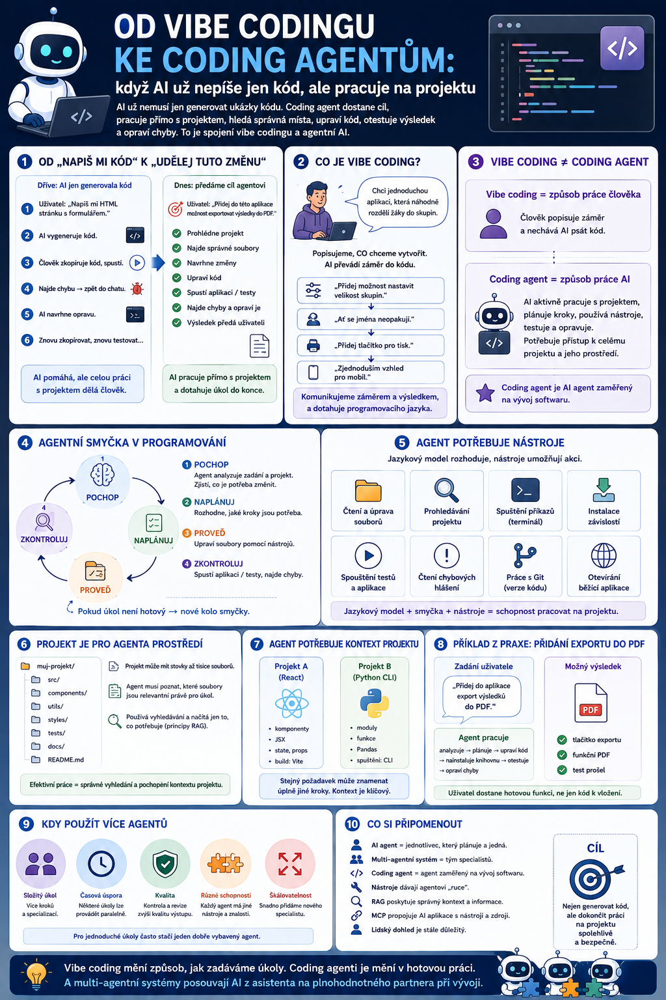

Ještě nedávno znamenala práce s AI při programování hlavně jedno: požádali jsme ji, aby napsala kus kódu. Dnes jí můžeme svěřit celý úkol – prohlédnout projekt, najít správné soubory, navrhnout změnu, upravit kód, spustit aplikaci, odhalit chybu a zkusit ji opravit. Právě tady se vibe coding potkává s agentní AI.

Od „napiš mi kód“ k „udělej tuto změnu“
První generace AI nástrojů pro programování fungovala podobně jako běžný chatbot.
Uživatel napsal například:
„Napiš mi HTML stránku s formulářem.“
AI vytvořila kód.
Člověk ho zkopíroval do editoru, spustil, našel chybu, vrátil se do chatu a napsal:
„Nefunguje tlačítko.“
AI navrhla opravu.
Člověk ji znovu zkopíroval.
A tak pořád dokola.
AI tedy pomáhala s programováním, ale samotnou práci s projektem stále prováděl člověk.
Dnešní coding agent může dostat úplně jiný typ zadání:
„Přidej do této aplikace možnost exportovat výsledky do PDF.“
A místo pouhého vygenerování ukázky kódu může začít pracovat přímo s projektem.
Co je vibe coding
Pojem vibe coding se používá pro způsob tvorby softwaru, při kterém člověk popisuje především to, co chce vytvořit, a velkou část samotného psaní kódu přenechává AI.
Místo detailního programování například napíšeme:
„Chci jednoduchou aplikaci, která učiteli náhodně rozdělí žáky do skupin.“
Potom výsledek postupně upravujeme:
- „Přidej možnost nastavit velikost skupin.“
- „Ať se jména neopakují.“
- „Přidej tlačítko pro tisk.“
- „Uděláme vzhled jednodušší pro mobil.“
Člověk tedy nemusí přesně znát syntaxi programovacího jazyka.
Komunikuje spíše prostřednictvím záměru a požadovaného výsledku.
To je podstata vibe codingu.
Vibe coding ale není totéž co coding agent
Tyto pojmy spolu souvisejí, ale nejsou stejné.
Vibe coding je způsob práce člověka.
Člověk popisuje, co chce vytvořit, a AI mu pomáhá převádět záměr do kódu.
Coding agent je způsob, jakým může AI tuto práci provádět.
Agent totiž nemusí pouze generovat textový kód.
Může dostat přístup k celému projektu a aktivně v něm pracovat.
To je zásadní rozdíl.
Klasický AI pomocník
Představme si zadání:
„Přidej do aplikace tmavý režim.“
Běžný AI chatbot může odpovědět:
A zobrazí řešení.
Práci musí dokončit člověk.
Coding agent
Coding agent může při stejném zadání udělat něco podobného:
Uživatel přitom nemusí znát názvy souborů ani přesnou strukturu aplikace.
Zadává hlavně cíl.
A to už velmi dobře odpovídá tomu, co jsme si v předchozích článcích popsali jako AI agenta.
Agentní smyčka v programování
Vzpomeňme si na princip:
U coding agenta můžeme jednotlivé fáze vidět téměř doslova.
Pochop
Agent analyzuje zadání:
Uživatel chce přidat export výsledků do PDF.
Současně prohlédne projekt.
Zjistí například:
Výsledky jsou uloženy v této komponentě a aplikace používá tento framework.
Naplánuj
Rozhodne:
Potřebuji přidat knihovnu pro tvorbu PDF, vytvořit exportní funkci a přidat tlačítko do uživatelského rozhraní.
Proveď
Agent upraví soubory.
Zkontroluj
Spustí aplikaci nebo testy.
Zjistí:
Export skončil chybou.
Nové kolo
Analyzuje chybu.
Upraví kód.
Spustí test znovu.
To je agentní smyčka v praxi.
Coding agent potřebuje nástroje
Samotný jazykový model nemůže pracovat s projektem bez dalších schopností.
Coding agent proto dostává nástroje.
Může například:
- číst a upravovat soubory,
- prohledávat projekt,
- spouštět příkazy v terminálu,
- instalovat závislosti,
- spouštět testy,
- číst chybová hlášení,
- pracovat s verzovacím systémem,
- otevřít běžící aplikaci.
Jazykový model rozhoduje:
Co potřebuji udělat dál?
Nástroje mu umožní tento krok skutečně provést.
Coding agent je tedy pěknou ukázkou našeho předchozího vzorce:
Projekt je pro agenta prostředí
U běžného chatu tvoří hlavní prostředí konverzace.
U coding agenta je jeho pracovním prostředím celý projekt.
Může obsahovat stovky nebo tisíce souborů.
Agent proto musí poznat:
Nemá smysl při každé drobné změně načítat celý projekt.
Musí vyhledávat.
A tady se znovu objevují principy, které už známe z RAG.
Agent může najít relevantní části kódu, dokumentaci nebo projektové instrukce a načíst jen to, co právě potřebuje.
Coding agent potřebuje kontext projektu
Představme si dva projekty.
V jednom se používá:
ve druhém:
Uživatel zadá v obou případech:
„Přidej nové tlačítko.“
Výsledek musí být technicky úplně jiný.
Agent proto musí nejprve zjistit:
Jak je tento konkrétní projekt postaven?
To je důvod, proč je práce přímo uvnitř projektu tak významný posun proti obyčejnému chatu.
AI už nedostává pouze otázku.
Dostává také kontext skutečného prostředí, ve kterém má pracovat.
Projektové instrukce fungují jako procedurální paměť
V předchozím článku o paměti jsme mluvili o informacích typu:
Jak má agent určité úkoly provádět?
Coding projekty mohou obsahovat například instrukce:
- Používej existující komponenty.
- Nevytvářej novou databázi.
- Před dokončením úkolu spusť testy.
- Neměň soubory v této složce.
- Pro nové funkce používej tento způsob pojmenování.
Takové instrukce dávají agentovi dlouhodobější pravidla.
Nemusíme mu je opakovat v každém promptu.
Skills: opakovatelný způsob práce
Ještě zajímavější je možnost dát agentovi specializované skills, tedy opakovaně použitelné schopnosti nebo pracovní postupy.
Například:
může znamenat:
Skill tak může obsahovat osvědčený postup pro určitý typ úlohy.
Pro člověka to znamená, že nemusí pokaždé psát:
Udělej A, potom B, nezapomeň C a nakonec zkontroluj D.
Může pouze zadat cíl a agent použije známý pracovní postup.
To je další krok od jednoduchého promptování směrem k opakovatelným agentním workflow.
A tady se znovu vrací MCP
Coding agent nemusí být omezen pouze na vlastní soubory.
Může potřebovat například:
- GitHub kvůli issue a pull requestům,
- designový nástroj kvůli návrhu obrazovky,
- databázi kvůli datům,
- dokumentaci kvůli technickým pravidlům,
- prohlížeč kvůli testování aplikace.
A právě zde mohou standardy jako MCP pomoci jednotlivé služby k agentovi připojovat.
Coding agent se tak postupně mění z nástroje na psaní kódu v pracovní prostředí schopné koordinovat několik různých služeb.
Vibe coding je díky agentům dostupnější
Tohle je pro běžného uživatele asi největší změna.
Dříve bylo poměrně snadné pomocí AI vytvořit první jednoduchou aplikaci.
Obtížnější bylo:
Jakmile vzniklo více souborů, začaly se objevovat problémy.
Uživatel nevěděl:
- Kam tento kód vložit?
- Proč něco přestalo fungovat?
- Co způsobuje tuto chybu?
- Který soubor mám změnit?
Coding agent může část této technické orientace převzít.
Proto se vibe coding stává použitelný i pro větší projekty než jen jednoduchou jednostránkovou aplikaci.
Jenže právě tady začíná nebezpečí
Čím samostatnější agent je, tím snadněji může udělat také větší škodu.
Klasický chatbot vám může navrhnout chybný kód.
Coding agent může chybný kód rovnou vložit do deseti souborů.
A pokud má široká oprávnění, může například:
- změnit databázovou strukturu,
- odstranit soubor,
- nainstalovat nevhodnou knihovnu,
- změnit konfiguraci,
- poškodit část aplikace, která předtím fungovala.
Vyšší autonomie tedy znamená větší pohodlí, ale také větší potřebu kontroly.
„Funguje“ ještě neznamená „je to dobře“
Tohle je při vibe codingu naprosto zásadní.
Uživatel zadá:
„Přidej přihlašování.“
Agent něco vytvoří.
Na obrazovce se objeví formulář.
Uživatel zadá jméno a heslo.
Aplikace ho pustí dál.
Na první pohled:
Jenže stále nevíme:
- Jsou hesla bezpečně uložená?
- Je autentizace správně implementovaná?
- Nemůže se uživatel dostat k cizím datům?
- Je komunikace zabezpečená?
- Neobsahuje aplikace zranitelnost?
To jsou věci, které nemusí být na obrazovce vůbec vidět.
Vibe coding mění roli člověka
Když AI přebírá stále větší část psaní kódu, role člověka se posouvá.
Méně času trávíme tím:
jak přesně napsat jednotlivý příkaz
a více tím:
co má systém dělat, jak má fungovat a jak poznáme, že funguje správně.
Člověk se tak částečně přesouvá z role programátora do role:
To je docela zásadní změna.
Umět zadat cíl nestačí
Kolem vibe codingu občas vzniká představa:
Nemusím ničemu rozumět. Prostě AI řeknu, co chci.
Na jednoduchém projektu to může nějakou dobu fungovat.
S rostoucí složitostí ale potřebujeme alespoň základní schopnost poznat:
- zda řešení dává smysl,
- zda agent mění správnou část projektu,
- zda chyba není vážná,
- zda nevzniká bezpečnostní problém,
- kdy je lepší změnu zastavit.
Nemusíme umět napsat každý řádek kódu.
Potřebujeme ale rozumět systému natolik, abychom dokázali kontrolovat výsledek.
Proto je důležité verzování
Jeden z nejpraktičtějších návyků při práci s coding agenty je obyčejné:
Pokud agent provede deset změn a aplikace přestane fungovat, potřebujeme možnost vrátit se zpět.
Proto je při vážnější práci důležitý verzovací systém, například Git.
↓
agent provede úpravu
↓
nová verze
↓
pokud se něco pokazí: návrat k předchozí verzi
Bez toho může být vibe coding docela zábavný až do chvíle, kdy během pěti minut zmizí něco, co jsme dva dny stavěli.
Pak už bývá vibe výrazně méně vibey. 🙂
Testování začíná být ještě důležitější
Když kód píše člověk, měl by ho testovat.
Když kód píše AI agent, platí to úplně stejně.
Možná ještě víc.
Agent může vytvářet automatické testy a následně je sám spouštět.
To umožňuje velmi užitečný pracovní cyklus:
Právě automatické testování je jeden z důvodů, proč mohou coding agenti fungovat relativně samostatně.
Agent totiž získává zpětnou vazbu, zda jeho změna něco nerozbila.
Nejdůležitější je dobře definovat, co znamená „hotovo“
Představme si požadavek:
„Vytvoř registrační formulář.“
Co znamená hotovo?
Že se formulář zobrazí?
Nebo také:
- kontroluje povinná pole,
- ověřuje e-mail,
- funguje na mobilu,
- je přístupný,
- ukládá data,
- má ošetřené chyby,
- prošel testy?
Čím jasněji definujeme kritéria dokončení, tím lépe může agent pracovat.
To je jeden z velkých rozdílů mezi náhodným vibe codingem a systematickou prací s coding agentem.
Od promptu ke specifikaci
S rostoucí složitostí projektu se proto mění i způsob zadávání.
Místo:
„Udělej mi hezkou aplikaci na rezervaci učeben.“
je lepší zadat například:
Takové zadání už není obyčejný prompt.
Je to malá specifikace produktu.
A coding agent z ní může vytvořit plán práce.
Čím schopnější AI, tím důležitější zadání
To může znít paradoxně.
Čekali bychom:
Čím lepší AI, tím méně musím vysvětlovat.
U jednoduchých úloh ano.
Ale u velkých projektů platí něco jiného:
Pokud dáme neurčitý cíl agentovi, který umí změnit deset souborů, dostaneme velmi efektivně provedenou neurčitou představu.
A to není vždy výhra.
Praktický workflow pro vibe coding s agentem
Pro začátečníka bych doporučila jednoduchý pracovní princip:
- Popište cíl a uživatele aplikace.
- Nechte agenta nejprve navrhnout postup.
- Stavte po menších funkčních částech.
- Po každé větší změně aplikaci vyzkoušejte.
- Udržujte fungující verzi, ke které se lze vrátit.
- Důležité oblasti – přihlášení, platby, osobní údaje, bezpečnost – nekontrolujte jen podle toho, že „to nějak funguje“.
- Před zveřejněním proveďte finální kontrolu celého projektu.
To už je mnohem bezpečnější než zadat:
„Postav mi celý informační systém.“
a odejít na kávu.
Pro učitele je to překvapivě zajímavá změna
Vibe coding neznamená, že se každý učitel musí stát vývojářem.
Ale výrazně snižuje překážku mezi:
a
„Dokážu vytvořit jeho funkční prototyp.“
Učitel si může například vytvořit:
- generátor skupin,
- jednoduchý kvíz,
- procvičování slovní zásoby,
- interaktivní mapu,
- simulaci,
- jednoduchou výukovou hru,
- evidenční pomůcku,
- malou webovou aplikaci pro konkrétní aktivitu.
Dříve by většina těchto nápadů skončila větou:
„To by bylo hezké, kdyby nám to někdo naprogramoval.“
Dnes můžeme alespoň prototyp často vytvořit sami.
Ale škola potřebuje hranice
Pokud jde o jednoduchou výukovou hru bez ukládání dat, riziko je malé.
Úplně jiná situace nastává, pokud aplikace pracuje s:
- jmény žáků,
- známkami,
- zdravotními informacemi,
- přihlašovacími údaji,
- osobními údaji,
- školními systémy.
V takové chvíli už nestačí:
„AI to naprogramovala a vypadá to, že to funguje.“
Musí nastoupit běžná pravidla bezpečnosti, ochrany dat a správy školních IT systémů.
Vibe coding není výjimka z GDPR ani z bezpečnosti.
Coding agent není programátor, kterého můžeme přestat kontrolovat
Tohle je asi nejdůležitější závěr.
Coding agent může být neuvěřitelně produktivní.
Umí za několik minut provést práci, která by člověku zabrala výrazně déle.
Ale stále může:
- špatně pochopit zadání,
- vybrat nevhodnou technologii,
- vytvořit bezpečnostní chybu,
- rozbít jinou část projektu.
Proto bych ho chápala spíš jako:
než jako:
Zapamatujte si
Vibe coding a coding agent nejsou totéž.
Vibe coding je způsob tvorby, při kterém člověk popisuje především požadovaný výsledek a AI mu pomáhá vytvářet software.
Coding agent je AI systém, který dokáže na projektu samostatněji pracovat:
A právě proto je coding agent jednou z nejviditelnějších ukázek agentní AI v praxi.
Přecházíme totiž od:
„Napiš mi tento kód.“
k:
„Tady je můj projekt. Udělej tuto změnu a ověř, že funguje.“
Co bude následovat
Teď už jsme agentní AI viděli nejen technicky, ale také v reálném pracovním prostředí.
Zbývá otázka, která je pro tento web možná vůbec nejdůležitější:
V dalším díle bych už opustila abstraktní technologii a ukázala konkrétní situace: přípravu výuky, práci s vlastními materiály, hledání ve školních dokumentech, administrativu, tvorbu pracovních listů, kontrolu výstupů a dlouhodobého učitelského asistenta.
A zároveň bych tam velmi jasně oddělila tři zóny: co může agent dělat samostatně, co má dělat jen po potvrzení člověka a kam bych ho ve škole vůbec nepouštěla.
To by podle mě byla pěkná tečka za celou základní sérií — z „co je agent“ bychom se dostali až k otázce „dobře, a co z toho mám jako učitel?“